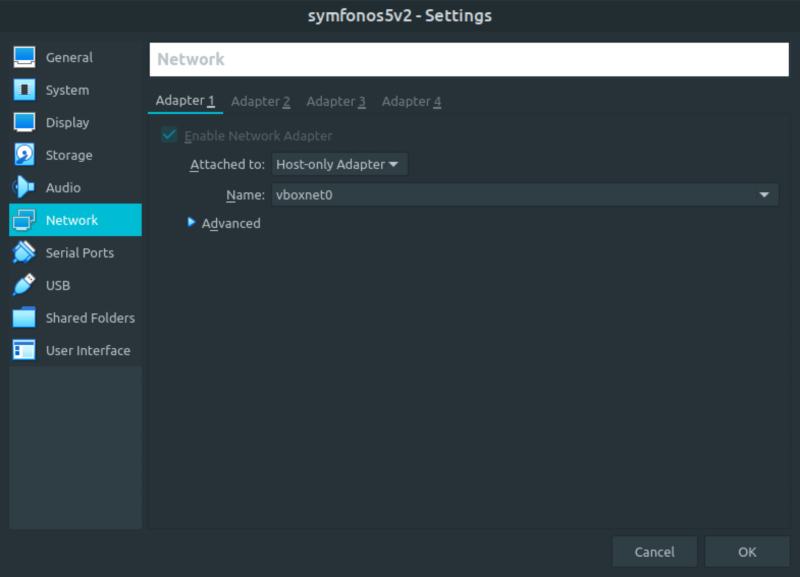
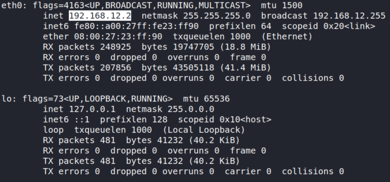
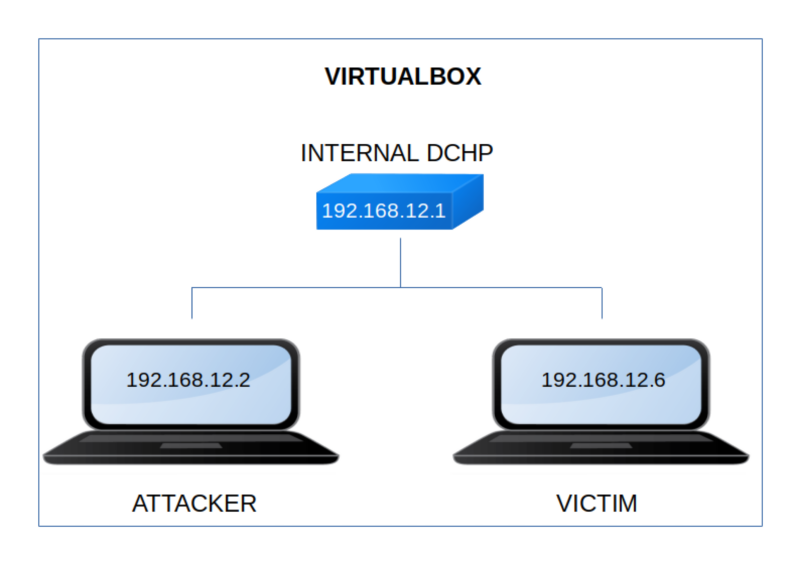

Symfonos 5v2
▸ Symfonos 5v2
▸ 1. Scan Network
▸ 2. Finding Services and Ports
▸ 3. Enumerate
▸ 3.1 Gobuster
▸ 3.2 Checking admin.php
▸ 3.3 Is it vulnerable for LFI and path traversal vulnerabilities?
▸ 3.4 LDAP Enumeration
▸ 4. Privilege Escalation
▸ 4.1 Connecting via SSH
▸ 4.2 Creating a Debian package
▸ 4.3 Downloading the package
▸ 5. Getting the flag
Difficulty: Intermediate.
Flag: 1 flag.
Learning:
• Getting the IP Address through the running VM
• Port Scanning Through Nmap
• Enumerating HTTP Port with Gobuster
• Identifying and verifying Remote File Inclusion (RFI) Vulnerability
• Getting LDAP credentials by exploiting Path Traversal Vulnerability
• Capturing Username and Password by utilizing LDAP credentials
• Logging in into the system through SSH credentials
• Createing a Debian Package with a malicious code
• Downloading the Package to the Victim Machine
• Running the Package as root
• Download: https://drive.google.com/uc?id=1oKkjcxF7Ft84jqG33afPvf5-q8tFrvyq&export=download
• Download (Mirror): https://download.vulnhub.com/symfonos/symfonos5v2.7z
• Download (Torrent): https://download.vulnhub.com/symfonos/symfonos5v2.7z.torrent
Install the machine on VirtualBox:
1. Download the file and extract it.
2. On Virtualbox choose File->Import Appliance.
3. Select the file “ovf”.
4. Accept to import.


Watch your Machine IP.
$ ifconfig
Output:

Diagram
